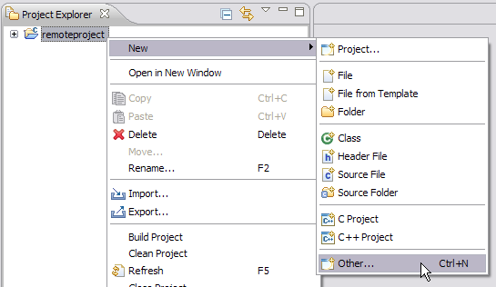
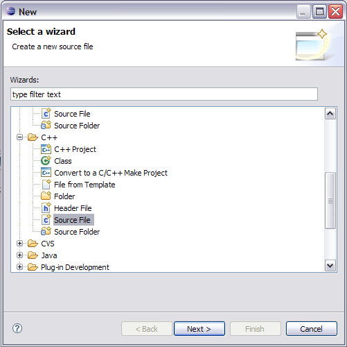

The file will open in the Remote C/C++ editor.

Once you have created a new remote C/C++ project, you can begin coding your program. The .cpp file that you create will be saved in the project folder you just created in Creating a remote project.
Files are edited in the Remote C/C++ Editor located to the right of the Project Explorer view. The left margin of the Remote C/C++ Editor, called the marker bar, displays icons for items such as bookmarks, breakpoints, and compiler errors and warnings.
For more information about:
To create a C++ file:
The file will open in the Remote C/C++ editor.
Your new .cpp file is displayed in the Project Explorer view. Before you can build your newly created project, you must create a makefile. See Creating your makefile.